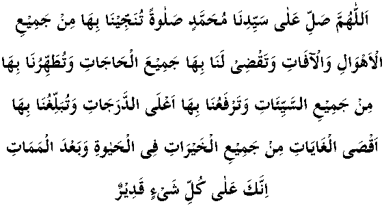

There was a saint called Musa Ḍarīr (may Allah have mercy on him) who related his own experience. He says, 'I was travelling in a boat which began to sink. Suddenly, I became drowsy and then I saw Nabi (sallallahu alayhi wasallam). He taught me this durood and then instructed that all those aboard the boat should read it one thousand times. We had only recited it three hundred times when the boat was saved from sinking.'" The durood is as follows:

O Allah, send blessings upon our leader Muḥammad, blessings whereby You will save us from all worries and calamities, whereby You will fulfil all our needs, purify us from all sins, raise our positions to the highest of stations, send us to the furthest heights in all acts of goodness in this life and the Hereafter. Verily you have power over everything.